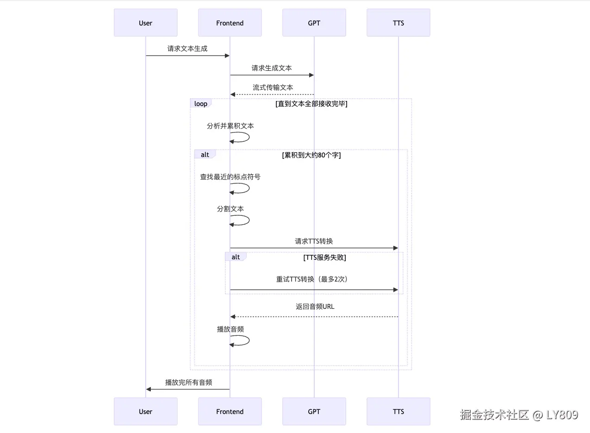

DEMO 体验: 虚拟人驱动口型体验
Live2D 是一种应用于电子游戏的绘图渲染技术，该技术由日本 Cybernoids 公司（现已更名为 Live2D）开发。通过一系列的连续图像和人物建模来生成一种类似三维模型的二维图像，对于以动画风格为主的游戏来说非常有用。
简单来说，Live2D 就是一项在不增加绘图工作量的基础上，让 2D 人物“活”起来的技术。画师只需要绘制一张原画，然后将身体、五官、发型、服装等 2D 图片放到全 3D 的模型模板上。
live2d 主要应用在游戏和虚拟直播比较多。效果偏向于卡通动漫，写实效果差。
官方是提供 Live2d Web SDK，但是文档写的很差，几乎必须查阅源代码才能上手。比较好的是有基于 pixijs 封装的pixi-live2d-display,方便在 Web 中接入 Live2d 模型。下面是按需引入的方式，可以减少打包体积。
import { Live2DModel } from 'pixi-live2d-display/cubism4'
import { Application } from '@pixi/app'
import { Ticker, TickerPlugin } from '@pixi/ticker'
// register Ticker for Live2DModel
Live2DModel.registerTicker(Ticker as any)
// register Ticker for Application
Application.registerPlugin(TickerPlugin)
onMounted(async () => {
const app = new Application({
view: canvasRef.value,
resizeTo: canvasRef.value.parentElement,
backgroundAlpha: 0,
antialias: true, // 启用抗锯齿
})
const model = await Live2DModel.from('model.json')
model.scale.set(props.scale)
model.x = (app.view.width - model.width) / 2
model.y = (app.view.height - model.height) / 2
app.stage.addChild(model)
})
live2d 口型同步是一个难点，大多数是通过不同播放中的音频的声调大小来控制口型的开合程度，实现效果较差。如果要想实现相对好一点的效果需要用到最新版本的 Cubism5 新出的 MotionSync 功能，可以支持日语元音 AEIOU 五种类型口型，效果会好一些。Live2d 官方在 GITHUB 开源了他的口语同步 demoCubismWebMotionSyncComponents，通过分析 demo 源码分析，抽取核心功能代码并在上面二次修改实现 MotionSync 类以接入我们现有的应用。实现的原理就是通过一些算法提取音频流的信息，在每一帧中不断的分析，得到设置口型开合的大小以及设置日语元音 AEIOU 最接近的元音口型。Live2d 口型同步相关代码和更新日志可以在Cubism SDK MotionSync查看。
我创建了一个 npm 库 live2d-motionSync，可以方便的让 Live2d 模型支持口型同步
源代码：github
DEMO 体验: 虚拟人驱动口型体验
接入方式
import * as PIXI from "pixi.js";
import { Live2DModel } from "pixi-live2d-display";
import { MotionSync } from "live2d-motionsync";
// expose PIXI to window so that this plugin is able to
// reference window.PIXI.Ticker to automatically update Live2D models
window.PIXI = PIXI;
(async function () {
const app = new PIXI.Application({
view: document.getElementById("canvas"),
});
const model = await Live2DModel.from("kei_vowels_pro.model3.json");
// 初始化 motionsync
const motionSync = new MotionSync(model.internalModel);
// 加载 motionsync 文件
motionSync.loadMotionSyncFromUrl("kei_vowels_pro.motionsync3.json");
// 没有 motionsync3 文件可以加载默认 motionsync3 配置
// motionSync.loadDefaultMotionSync();
// 确保已经页面交互
// 播放音频
motionSync.play("/audio/test.wav").then(() => {
console.log("播放完毕");
});
// 停止音频
// motionSync.stop();
app.stage.addChild(model);
// transforms
model.x = 100;
model.y = 100;
model.rotation = Math.PI;
model.skew.x = Math.PI;
model.scale.set(2, 2);
model.anchor.set(0.5, 0.5);
// interaction
model.on("hit", (hitAreas) => {
if (hitAreas.includes("body")) {
model.motion("tap_body");
}
});
})();
有了控制口型的能力，只需要把虚拟人和我们业务联动起来就可以实现虚拟人对话了。
附上一张虚拟人对话的流程图：
技术通过 TTS+GPT+Live2d 实现的
源代码：github